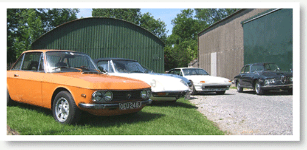

Situated at the foot of the Wiltshire Downs,close to the historic village and stone circle of Avebury in Wiltshire, England our stock can be driven and enjoyed amidst some of the best scenery in the country.
We have over a decade of experience in and enthusiasm for classic cars.
We cover all makes but have a special interest in Italian marques,nevertheless
we are still open to the appreciation of all marques and their individual
qualities.Although primarily involved in classic cars sales we do also
offer some restoration sevices
mainly bodywork and paint.We can also offer trimming services from our
professional trimmer of some 30 years experience.
